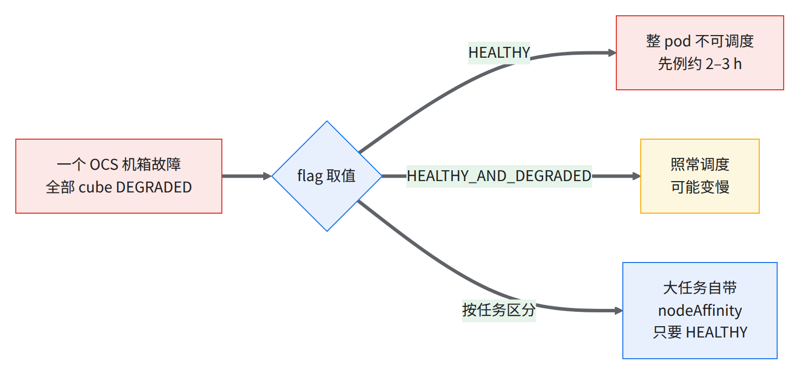
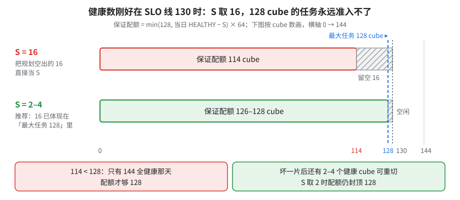
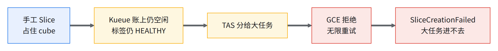
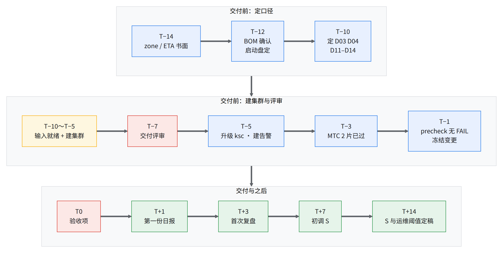

09 交付前需要和你确认的决策
要解决什么：「健康 cube」「可用」「备件」「维护」这几个词，双方理解不同，交付后就对不上账。每项列出问题、可选项、需要你提供或决定什么。 01 就要开始：D19（日期）、D20（zone）不定，01 的配额和网络没法提。
- 144 个物理 cube，全在你的 reservation 里
- 128 cube：最大任务按它规划
- 2–4 个：每日留空 S 起步值
- 7 件：交付评审时必须定下
9.0一张总表
| # | 决策 | 你需要提供 / 决定 | 书里在哪 |
|---|---|---|---|
| D01 | 「健康 cube」怎么数 | 日报和告警用哪个口径 | 00 §4、08 §8.1 |
| D02 | SLO 线与量法 | 量法；自建探针 | 00 §4、01 §1.2 |
| D03 | DEGRADED cube 能不能跑 大任务 | 集群默认值；大任务是否只用 HEALTHY | 03 §3.3 |
| D04 | 备件 cube 数 S 与 Kueue 配额 | S 初值；谁每天确认配额 | 03 §3.5、07 §7.5 |
| D05 | 维修预期 | 维修多久升级；15/16 清单多久过一次 | 07 §7.5、08 §8.5 |
| D06 | 平台侧抢占 | 看到时怎么排查 | 本章 |
| D07 | 维护窗口与自触发维护 | 谁触发、每批几个 cube、提前多久通知 | 08 §8.2 |
| D08 | OCS 故障时怎么办 | 出事时谁暂停提交、谁开 case | 08 §8.6 |
| D09 | 电力事件 | 事件期间冻结哪些操作 | 07 §7.1 |
| D10 | 版本钉死 | 谁维护 BOM；生产用哪版 jax / libtpu | 01 §1.6、08 §8.3 |
| D11 | 功耗档 | 是否偏离默认档 | 本章 |
| D12 | 优先级、抢占、时长上限 | 档位表；队列结构 | 03 §3.5、04 验收优先级 |
| D13 | 手工 Slice 政策 | 写进使用规范 | 05 §5.3 |
| D14 | core dump 政策 | 模板默认值 | 07 §7.4 |
| D15 | 配额与启动盘大小 | 启动盘大小；谁提配额 | 01 §1.4 |
| D16 | 网络 | IP 段、出网方式、控制面访问网段 | 01 §1.7 |
| D17 | 存储 | 数据桶位置、KSA、保留策略 | 01 §1.8 |
| D18 | 支持通道 | 你方接口人；夜间升级路径 | 08 §8.5 |
| D19 | 交付日期 | 以书面 ETA 排期 | §9.5 |
| D20 | zone | 以书面 zone 提配额和网络 | 01 §1.8 |
| D21 | 验收项 | 见 04 | 04 验收项 |
| D22 | reservation 生命周期 | 到期提醒；谁接受 future reservation | 01 §1.1 |
| D23 | 事故通知 | 联系人、渠道、时限 | 08 §8.5 |
交付评审（T−7）必须定下的 7 件：D01、D02、D03、D04、D12、D13、D14。前四件决定配额和日报怎么算，后三件写进集群使用规范。
9.1容量、健康与备件
D01「健康 cube」怎么数
问题：SLA、Google 仪表盘、你的调度器数的「健康 cube」不是同一批。
| 层 | 叫法 |
|---|---|
| Google SLO | HEALTHY + DEGRADED 都算健康（前提是开着 ICI resiliency） |
GCE sub-block healthInfo |
HEALTHY / DEGRADED（healthyHostCount、degradedInfraCount） |
GKE 节点标签 partition-4x4x4-state |
实测只见到 HEALTHY / UNHEALTHY；GCE 的 DEGRADED(15/15) 在这里是 UNHEALTHY |
- 健康数天天在动：同一个 pod 隔几小时读，HEALTHY 16/16 的个数就不一样。
gcp_health_status会短暂假翻 DEGRADED，判定别用它（08 §8.1 告警 #2）。
可选项：
- 全按 Google SLO 口径：和 SLA 一致，大任务实际可用的 cube 可能更少。
- 全按 K8s HEALTHY：和调度器一致，但 SLA 不按它算。
- 两个数都报（本书
08-daily-check.sh的做法）：日报同报 K8s HEALTHY cube 数和 GCE DEGRADED sub-block 数。
你需要决定：日报和告警用哪个口径。不论选哪个，判定信号都建议用 healthyHostCount / degradedInfraCount 持续 ≥5 min，不用 gcp_health_status。
D02 SLO 线与量法
问题：「至少 N 个 cube 可用」的 N 是多少？怎么量？
- 144 个 cube 全在你的 reservation 里。资料里常见 130/144（per block），这是 Google 侧 SLO 目标，不是对外条款；以你拿到的书面 SLA 原文为准。
- 其余 14 个不在 SLO 目标内，当热备，闲时跑低优先级任务。
- 资料里维护窗口内的 cube 不计入 SLO，关掉 ICI resiliency 也属于免责（00 §4）；同样以书面原文为准。
- 用哪个信号（D01）、统计窗口多长、维护窗口怎么排除。
- 双方各记每次维护窗口，月底对账。
你可以自己建的探针（留证据）：
- 每个 cube 16/16 Ready +
partition-4x4x4-state计数。 - 备件 cube 上周期性跑一个 4x4x4 金丝雀任务。
- 低于目标 ≥10 min 告警。
D03 DEGRADED cube 能不能跑 大任务
问题：kueue-slice-controller 的 --default-slice-health-node-affinity 设 HEALTHY 还是 HEALTHY_AND_DEGRADED？

可选项：
HEALTHY：只用全好的 cube；一个 OCS 机箱故障就整 pod 不可调度。HEALTHY_AND_DEGRADED（本书模板和公开 manifest 的默认值）：照常调度，训练日志记下是否用了 DEGRADED partition。- 按任务区分：集群默认
HEALTHY_AND_DEGRADED，大任务自带 nodeAffinity 只要 HEALTHY。
这个 flag 的效果本书没实测：D01 里 GKE 标签只见到 HEALTHY / UNHEALTHY，两种取值在实际集群上可能没区别 [推断]。
你需要决定：集群默认值；大任务是否只用 HEALTHY。只用 HEALTHY 时，大任务可用的 cube 数会低于 SLO 计数（D02）。
D04 备件 cube 数 S 与 Kueue 配额
问题：留几个 cube 给「坏一片、整任务重切」？配额怎么算、谁每天更新？
- 坏机器原地修（D05）；多片任务坏一片 = 所有片重切，要有空闲的健康 cube。
- 健康数天天在动，配额按固定数写会超卖：任务准入了，却拿不到卡。
两个数：规划空出 = 144 − 128 = 16（14 个不保证 + 2 个规划余量），一次性决定最大任务（例如 8 × 16-cube 或 4 × 32-cube）；每日留空 S，每天算配额时减掉。
⚠️别把 16 当成 S那样只有 144 个全健康那天配额才够 128，128 cube 的任务基本永远准入不了。

可选项（以当日健康 cube 刚好 130 为例）：
| S | 配额 | 能扛什么 [推断] |
|---|---|---|
| 16 | 114 cube | 见上框 |
| 2–4 | 126–128 cube | 坏一片后有 2–4 个 cube 可重切；配额要满 128，当日健康数须 ≥ 128 + S |
| 按实测 | — | 交付后两周量出每日波动再定 |
本书的做法：
- 最大任务 ≤128 cube，配额 = min(128, 当日 HEALTHY − S) × 64，每天用
03-addons.sh quota重算（03 §3.5）。 - S 先取 2–4，T+14 天按实测调 [推断]。
- 备件给可回收的借用队列（D12）。
- 盯备件深度和 15/16 cube 数，不只看「达标没有」。
每日重算（未实测）
- 机器只算建议值，改配额要人确认，由你方运维值班确认。
- 为什么不全自动：
queues带--force-conflicts，会盖掉05-isolate-cube.sh当天 patch 的值；08-daily-check.sh --probe只告警、不改配额。 - 流程：cron 跑
quota（只读）→ 值班看建议值 → 手工跑queues。 - 前提：
~/runbook-env.sh（或 env.sh）里先填好SPARE_CUBES（每日留空 S）。没填时quota只打印健康 cube 数，不给建议值，并在 stderr 报一行警告（cron 落的文件里能看到）。
# ① crontab（值班机，按机器本地时区；% 在 crontab 里要转义）：每天只读算一次建议值，落文件
0 9 * * * bash -lc 'source ~/runbook-env.sh && cd "$RUNBOOK_DIR"/scripts && mkdir -p "$STATE_DIR/03" && ./03-addons.sh quota > "$STATE_DIR/03/quota-$(date +\%F).txt" 2>&1'
# ② 值班人工确认：和昨天比、和隔离清单（PartOfBrokenSlice）对得上；通知渠道自行接入
cat "$STATE_DIR/03/quota-$(date +%F).txt"
# ③ 确认后才改（TPU_QUOTA 只用当天 ① 的建议值，别手填旧值）
cd "$RUNBOOK_DIR"/scripts && TPU_QUOTA=<当天建议值> ./03-addons.sh queues
- 怎么验证：第一次挂上后，对比文件里的「建议 TPU_QUOTA」和手跑
./03-addons.sh quota是否一致；cron 环境下 kubectl 凭据能不能用要先试（未核）。
你需要决定：S 初值；谁每天确认配额；最大任务按多少 cube 规划。
D05 维修预期：原地修、REPAIRING 数天
问题：机器坏了多久能回来？
| 现实 | 说明 |
|---|---|
| 原地修 | 坏 VM 原地 REPAIRING，没有替换机；cube 在切片上时不许重建 VM |
| 时长 | 维修时长没有固定预期，实际数小时到数天 |
| 爆炸半径 | 1 台坏 = 整 cube 出局；芯片故障可能影响 1–4 台邻居 |
- REPAIRING 超过多久开 case（本书按 12 h）。
- 多久过一次「15/16 cube 清单」，清单带 sub-block ID。
- 报坏主机时附错误行和时间戳；同一台反复坏，在 case 里要求换件。
你需要决定：开 case 的阈值；清单评审的频率和参加人。
D06 平台侧抢占
先例：别的（非整 pod）预留上出现过无通知的平台侧抢占。交付前向 Google 书面确认：你的整 pod 预留会不会被平台侧抢占。作业事件里真出现 Preempted by [HIGHER_PRIORITY]，先排除自己的自动化删节点，再开 case；别和 D12 的 Kueue 抢占混。
D07 维护窗口、通知、谁触发维护
问题：维护谁触发、一批几个 cube、提前多久通知谁？
- 主机只有分组维护：约 90 天通知，到期强制；可在 host / sub-block / block / reservation 级提前触发（自触发维护）。主机的修复和回退只能靠自触发维护拿到。
- 批太大，一批 cube 可能长时间回不来，可调度数跌到 SLO 线以下。
- 节点维护通知不可靠，别只靠节点标签判断。
- GKE 侧的维护例外、冻结自动升级（08 §8.3）挡不住 GCE 主机维护。
可选项：
| 维度 | 候选 |
|---|---|
| 谁触发 | 你方运维 / 交付团队代运维 / Google |
| 批大小 | 小批（≤5 cube）/ 按余量算 |
| 窗口 | 你所在时区的白天（你方值班在岗）/ 美国白天（Google 支持在岗，见 D18） |
本书的做法：按 08 §8.2 触发；约 4–8 cube 一批 [推断]；批后逐台核 node_sw，15/16 的先 --scope=all 扫尾。
你需要决定：谁触发；每批多少；每次触发前提前多久通知 Google（建议至少 1 个工作日 [推断]），窗口记录留给 D02 对账。
D08 OCS 故障时怎么办
会出什么问题：
| 故障 | 表现 |
|---|---|
| 1 个 OCS 机箱 drain | 全部 cube DEGRADED (BAD_OCS)；4x4x4 及以上受影响，sub-cube 照常 |
| 一对 DCN / OCS 交换机都 drain | 全部 cube UNHEALTHY，整 pod 不可用 |
怎么认出来：任务报 TPU backend initialization is taking more than 60.0 seconds；sub-block 状态成片变 DEGRADED 或 UNHEALTHY。
谁来修：OCS 由 Google 修复，Google 侧有处理流程。
- 起不来就暂停提交，别按 cube 连发，连发会让全 pod 变 UNHEALTHY。
- 按 08 §8.6 开 case，附报错行和时间。
- 修好后是否要重建节点池，等 Google 书面判断再动。
你需要决定：机箱级故障时是否按 D03 照常调度；谁有权暂停提交。
D09 电力事件
交付前向 Google 了解所在机房的电力事件预案。事件期间别删池、缩容、删 reservation，等 Google 确认容量恢复；检查点频率按「可能停机数小时」设（07 §7.1）。
9.2版本、性能与使用规范
D10 版本钉死
修复常先以 allowlist 版本发布，交付 zone 未必有；控制面升级可能打掉切片，还会滚动升级组件。版本要钉死、变动走变更单。
BOM 草案（01 §1.6）：
| 组件 | 钉法 / 下限 |
|---|---|
| GKE 控制面 + 节点 | super-slicing ≥1.35.2-gke.1842000、sub-slicing ≥1.36.0-gke.3712000；先确认交付 zone 可用、要不要 allowlist |
| GKE 托管 slice controller | 随控制面；修复下限 slice_controller 1.36.20-gke.0 |
| kueue-slice-controller | 钉 digest；交付用 ≥v0.8.0-203 ＋ 新版 kueue-tpu-ac（版本号以 Google 确认为准；见下框）；不用 :latest（指向旧版本） |
| Kueue | 0.18.x，≥0.18.5（含大任务饿死修复与 TAS 剩余资源缓存修复），不跨 minor |
| JobSet | ≥0.12.0（sub-slicing 要求） |
| MTC driver | ≥0.8.4 |
| jax / libtpu / 镜像 | 每次运行钉死；换版本重测阈值（04 验收项），也要重看 HBM 余量 |
| 主机 bundle / ASIC-FW / BMC | reservation 钉快照；逐台记 ASIC-FW 版本 |
⚠️slice-controller 版本：实测用的版本带着已知恢复 bug
你需要决定：BOM 谁维护；生产用哪版 jax / libtpu；变更流程（金丝雀、回滚，顺序按 08 §8.3）。
D11 功耗档
训练是否使用非默认功耗档。本书的验收项和参考数字都按默认档；改档就要按新档重测 04 的阈值，9.6 节的数字也不能直接对照。
D12 优先级档位、谁能抢谁、运行时长上限
问题：多团队共用 pod 时谁能挤掉谁？任务最长跑多久？
实测行为（04 验收优先级）：
- 被抢的任务立刻重排；多片任务被抢一片 = 全部重切。
- 指向不存在的 WorkloadPriorityClass 时，JobSet 永远 suspend，没有 Event。
- 大任务饿死的修复在 Kueue 0.18.5 / 0.19.1（D10）。
可选项：
| 维度 | 候选 |
|---|---|
| 队列结构 | 一个持有 D04 配额的主队列（队内不互抢）+ 配额 0、可被回收的借用队列 / 单队列 |
| 档位 | 本书模板 03-kueue-priority.yaml：high 800 / medium 500 / low 100 / 自定 |
| 时长上限 | 不设（多日训练不被驱逐）/ 设上限 |
- PriorityClass 与同名同值的 WorkloadPriorityClass 一起建；可用 Kyverno 按 namespace 限档。
- 已完成的 JobSet 用
ttlSecondsAfterFinished清理。 - 交付后的验收任务用低优先级或错开窗口。
你需要决定：档位表（档名、数值、namespace、谁抢谁）；队列结构；是否设时长上限。
D13 手工 Slice 政策
问题：能不能绕过 Kueue，kubectl apply 一个 Slice 跑巡检、调试？

- 生产一律走 Kueue。
- 手工 Slice 只在维护窗口、队列清空时用，带 owner 标注、当天删。
- 要长期占用，先用 05-isolate-cube.sh 拿掉 cube。
- 日报第 5 段列无主手工片（08 §8.4）。
- 提交前过
05-avoid-manual-slices.py（06-jobset.sh apply默认已做）。
你需要决定：是否采用这份规范；谁有权建手工 Slice。
D14 core dump 政策
问题：一次 abort，JAX 协调服务让全体进程退出，每个进程往启动盘写几十 GB core → 节点 DiskPressure → TAS 当节点故障驱逐整个 Workload。
可选项：
| 选项 | 说明 |
|---|---|
全关（ulimit -c 0） |
最稳，丢崩溃现场；本书 JobSet 模板的默认（08 §8.6） |
| 写到 gcsfuse 目录 | [推断：没实测写几十 GB 要多久] |
| 调试时单个 worker 开 | 训练负责人临时批 |
你需要决定：模板默认值；谁能临时打开。
9.3配额、网络、存储、支持、验收、日期
D15 配额与启动盘大小
为什么要紧：非 TPU 配额是第一天的拦路虎，HDB 交期 8–14 周；Console 里改 preference 会悄悄把配额改小。
| 配额 | 需求 |
|---|---|
| TPU7X 芯片 | ≥9,216 |
| HDB 总 GB（启动盘） | 2,304 × 启动盘 GB（100 GB 时 230,400 GB） |
| HDB IOPS | 见 01 §1.4 |
| IN_USE_ADDRESSES | ≥2,336 |
| INSTANCES / INSTANCE_GROUPS | ≥2,304 + CPU 节点 / ≥154 |
| multi-MIG 配额 | 要 Google 调高 |
| GCE 读 API（每分钟每区域） | 切片控制器最坏约 3,456 reads/min [推断]；限流会把健康切片标 Unknown |
| Cloud Logging 摄入 | 整 pod 规模会打满默认值 |
可选项（启动盘）：100 GB 起，环境走 gcsfuse 上的 tar [推断]，前提是关 core dump（D14）；或更大的启动盘，HDB 配额按比例加。
你需要决定：启动盘大小；谁提配额。交付当天 01-precheck.sh 再读一次。
D16 网络：NAT、MTU、双网卡、IP 段
问题：VPC、子网、NAT、网卡数谁定？哪些建完改不了？
| 项 | 事实 |
|---|---|
| Cloud NAT | MANUAL_ONLY + 2 个 IP：先例中大量节点断网、无告警 |
| 双网卡 | 每台 2 块物理网卡（共 400 Gbps）、3 个接口（主 + 2 × DCN）；附加网卡建池时写死 |
| MTU | 两个 DCN VPC MTU 8896 |
| Pod CIDR | /14 + 110 pods/node 在 1,011 节点耗尽；用 /12 |
- NAT：自动分配 IP + 动态端口；要固定出网 IP（白名单）就得
MANUAL_ONLY，按节点数配足 IP 和端口。 - 网卡：建池时带双网卡（建完加不了）；训练默认用哪块，按 01 §1.7。
你需要提供：不与内网重叠的 IP 段；是否需要固定出网 IP；控制面授权网段（私有 + DNS endpoint，别写会变的 /32）。网络设计建池前双方确认后冻结。
D17 存储：gcsfuse + Workload Identity、检查点、读带宽
- gcsfuse 走 Workload Identity：所有节点池（含系统池）要开
GKE_METADATA，漏一个就挂载失败。 - 实测：单流 0.32 GB/s，16 台 × 32 路合计 56–60 GB/s，挂载到首字节约 4 s。
- 读带宽：训练数据桶在卡所在 zone 建 Anywhere Cache；缓存带宽配额（
anywhere_cache_egress_bandwidth）使用方自助提不了，要经 Google 申请；桶出口配额自助提到 1 Tbps 兜底（06a）。 - 没有 Local SSD，gcsfuse 缓存和 MTC ramdisk 都吃主机内存；MTC 要 HNS 桶，不会自动删 GCS 备份。
你需要提供 / 决定：数据桶位置（和 TPU 同区域）；给数据桶授权的专用 KSA（授 default = namespace 里任何 pod 都能读写 [推断]）；检查点保留策略；交付门槛要不要加「全 pod 规模 3 小时 FIO / 检查点模拟，同 zone」。
D18 支持通道
交付前确认：一线支持是谁、你所在时区的夜间谁接、P0 怎么升级、交付后谁负责容量 SLO。同时向 Google 要齐现有规程（维护指南、整机置换流程、巡检工具），直接引用、不重写——修复靠人手而规程不全，是生产事故里反复出现的规律（08c 规律九）。在此之前按 08 §8.5 开 case。
D19 交付日期
见 §9.5。验收不按固定日期排，以书面 ETA 为准；T0 避开周五和周末。
D20 zone
需要书面确认：zone、是否 AI zone（AI zone 的控制面在普通 zone）。zone 定了，再定存储位置、配额区域和 01 §1.7 的子网。
D21 验收项
建议验收项见 04。
故障演练（07 §7.3）是否列入验收项，由你方决定；前提是 MTC 模板先在 2 片上验证过（时间线 T−5 ～ T−3）。
另外可以向 Google 要一份「健康但有待办维护」的 sub-block 清单（01 §1.2），这些 cube 先不进主队列配额。
验收表带版本号冻结：交付后验收线可能被反复改（新增档位、换参考、放宽门槛）；每改一次，已交的数都要按新线重算，「达标」一词随日期变义。
- T0 前把验收表写成「版本 + 日期 + 模型 + 芯片数 + 序列长度 + 精度」。
- 之后改一次线就升一次版本号，双方签字；旧版本留档，不覆盖。
D22 reservation 生命周期
- reservation 按 144 个 cube 建，即使只到位 143（事后改 144 要删整个 reservation）。
deleteAtTime与约定一致，30 / 14 / 3 天提醒；到期 GKE 立刻删 TPU 节点。- future reservation 以 Draft 开始，你方须在期限内点接受。
你需要决定：谁收到期提醒；谁负责点接受 future reservation。
D23 事故通知
你需要提供：Google 通知你的联系人、渠道、时限（建议影响 ≥1 个 cube 的 1 h 内 [推断]）；你方发现的问题按 D18 开 case。
9.4你方分工与时间线
分工
| 你方角色 | 拍板 | 执行 / 参与 |
|---|---|---|
| 基础设施负责人 | D01、D04、D13、D15、D16、D17 | D02、D05、D07、D10、D18–D23 |
| 训练 / 算法负责人 | D03、D11、D12、D14 | D04、D13 |
| 运维值班 | — | D04 每天确认配额、D07 触发维护、D08 出事暂停提交并开 case、D12–D14 落实规范 |
D04、D12、D13、D14 必须由你方拍板，因为每天落实它们的是你方运维值班。
时间线（T = 交付当天）
| 时间 | 你方要做的事 |
|---|---|
| 交付日期有初步说法时（≈ T−8～14 周，不等 T−14 的书面 ETA） | 提 HDB 启动盘配额（交期 8–14 周）与运维角色审批（01 §1.4、§1.5 ②） |
| T−14 天 | 拿到 D19 / D20 书面答复；按 01 §1.4 复核配额缺口 |
| T−12 天 | 确认 D10 版本 BOM（01 §1.6）；定 D15 启动盘；D16 网络设计初稿 |
| T−12 天 | 经 Google 申请 Anywhere Cache 缓存带宽配额（周期未知）；出口配额自助提到 1 Tbps（06a 清单 #2、#3） |
| T−10 天 | 定 D03、D04、D11–D14 |
| T−10 天 | 输入就绪①（建集群前）：数据桶 $DATA_BUCKET（已有就跳过）→ 给训练 KSA 授 roles/storage.objectUser（01 §1.5 ③④） |
| T−10 ～ T−5 天 | 建集群：02 → 03 → 04 L0–L2 冒烟；出口 144 池 Ready（或 15/16 清单已交 Google） |
| T−10 ～ T−5 天 | 输入就绪②（集群建好后，按顺序）：GITHUB_SECRET（你方自己执行，token 不经他人）→ 镜像可拉验证 → MTC 桶（07-mtc-setup.sh）→ 环境包 ENV_TAR（06-build-env.sh） |
| T−10 ～ T−5 天 | L1 全量巡检窗口（04 §4.1）：先 plan --pool <池名> + apply --wave 1 跑 1 池拿实测耗时，再排全量 2,304 台；独占，不能和多 cube 任务并行 |
| T−10 ～ T−7 天 | 建 Anywhere Cache（06a §5）：zone 定了、配额批下就建；最长 48 h，要在训练前建好 |
| T−7 天 | 交付评审：本章决策逐项有结论或截止日 + 负责人 |
| T−7 ～ T−3 天 | 训练阶梯跑到 2 片（06c）；前提：输入就绪② 已过 |
| T−5 天 | slice-controller 升到 ≥v0.8.0-203 ＋ 新版 kueue-tpu-ac（03 升级，D10），升级后重跑 07 §7.3；核对网络与 D16 一致 |
| T−5 天 | 建告警策略：按 08 §8.1 那张表建；模板未实测，先在测试项目建一条看能否触发 |
| T−5 ～ T−3 天 | MTC 模板 2 片验证：07-jobset-mtc.yaml 用 SLICES=2 过文件头的验证四步；没过就不订演练窗口 |
| T−5 ～ T−1 天 | 支持通道就绪（D18、08 §8.5） |
| T−3 天 | 订验收独占窗口（04 排期） |
| T−1 天 | 重跑 01-precheck.sh；冻结变更；告警上线；模板带 ulimit -c 0 与 ttlSecondsAfterFinished |
| T0 | 跑 04 验收项；按 D04 设配额 |
| T+1 天 | 08-daily-check.sh 日报（HEALTHY 数、GCE DEGRADED 数、备件深度、15/16 数、REPAIRING >12 h） |
| T+3 天 | 复盘抢占 / 驱逐 / 手工片；首个训练任务步时和 06c 参考值对照 |
| T+7 天 | 按 7 天健康数分布初调 S；首份 15/16 清单交 Google；定首轮自触发维护日期 |
| （T+14 天） | 按两周实测定 S 与运维阈值 |
- 网络设计双方确认后才建集群：02 §2.1 的多网卡建后不可改。预期有少量池 partial，按 02 §2.5 排查 [推断]。
- T0 阈值冻结在签字当天，事后收紧只用于以后回归；改动要双签。
- 没测过的时长一律写「待定」，先跑小规模拿实测再排窗口。

读图：红色是两个关口；前一节点没达到出口条件，后面顺延。
9.5交付日期
交付日期常同时流传几种说法：口头日期、容量评审阶段、测试环境截止日。以书面 ETA 为准；测试环境到期和 pod 到货之间可能有空窗，要提前排 [推断]。
9.6可以对照的实测数字
在实测集群（00 §6）上测得，默认功耗档。参考基线，不构成 SLA。
| 项 | 实测 |
|---|---|
| 最大单片 | 8x16x16 = 2,048 芯；Slice 46–68 s 进 ACTIVE；提交到全部 Completed ≤160 s |
| 多片 | 10+ 片（数千芯）：提交到全部 Completed ≤230 s |
| 激活 | 安静时 26–63 s；同时建更大规模任务 161–172 s；被手工 Slice 挡住时约 6 / 12 min（D13） |
| 每芯片算力 | bf16 1,808、fp8 3,282 TFLOP/s；HBM 5.38 TB/s |
| gcsfuse 读 | 单流 0.32 GB/s；16 台 × 32 路合计 56–60 GB/s |
| core dump | 单容器 core 约 64 GiB，启动盘 94.3 GiB（kubelet 报的节点镜像文件系统大小，所在节点池启动盘配的是 100 GB）（D14、D15） |
检查点
做完了
- 每项决策有结论，或有截止日 + 负责人
- D01、D02 的口径与量法写下来；D04、D12–D14 进集群规范
- T 已定，T−7 交付评审开过
- 时间线各行你方负责人已明确
说得出（括号里是答案）
Google 说「达标」而你觉得「不够用」，最常见的原因是什么？
DEGRADED 在 SLO 里算健康，而 大任务不用 DEGRADED144 个 cube 怎么规划？
最大任务 128，空出 16；130/144 是 Google 侧 SLO 目标，其余 14 个当热备为什么备件数由你方拍板？
每天按健康数改配额的是你方运维；S 取决于你方能接受的最大任务
交棒：决策定下后，回 01 按定下的 zone、配额、网络开工。